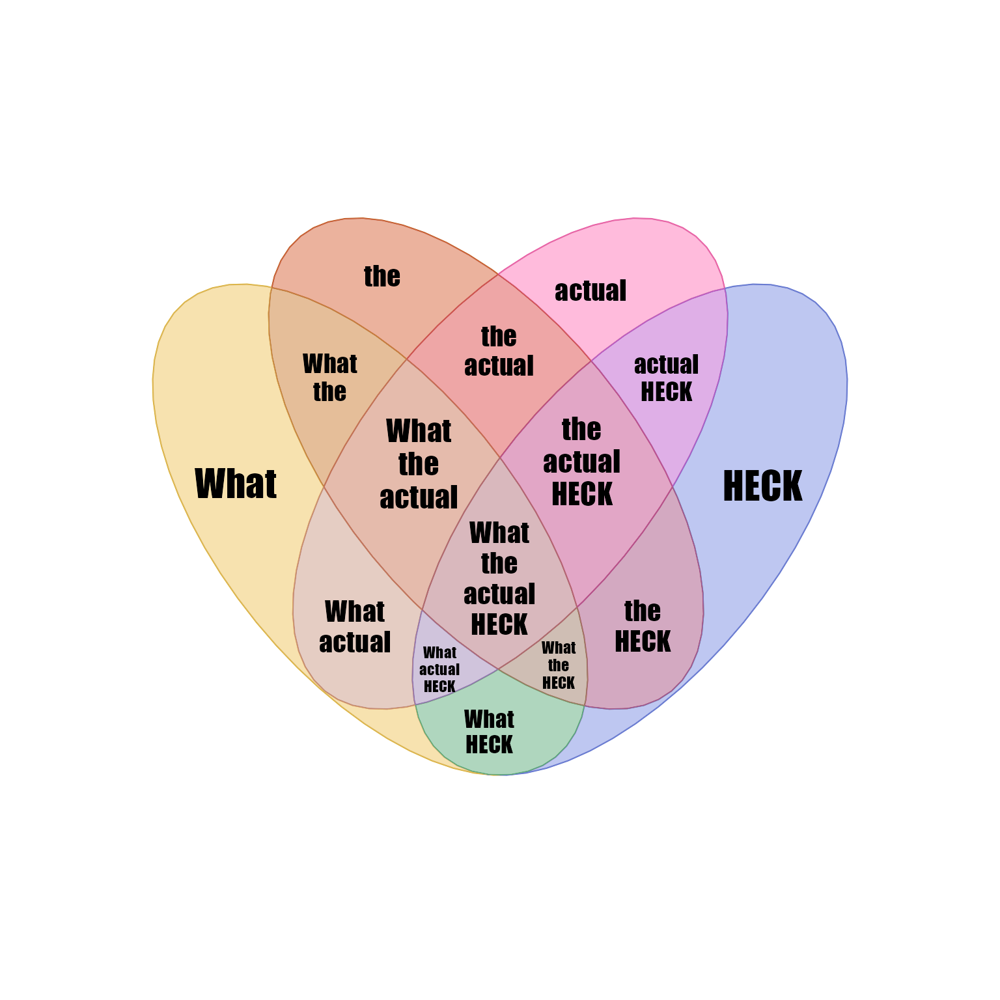
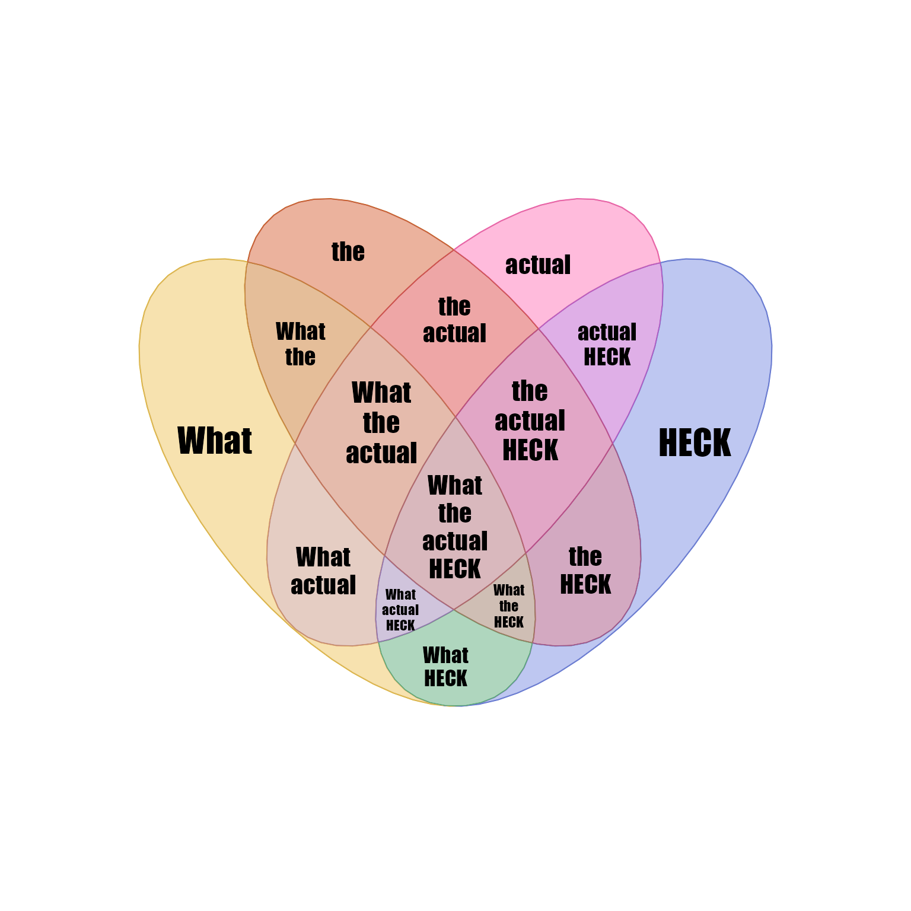
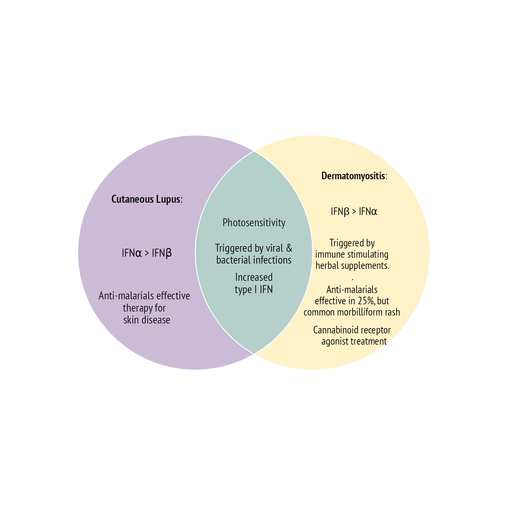
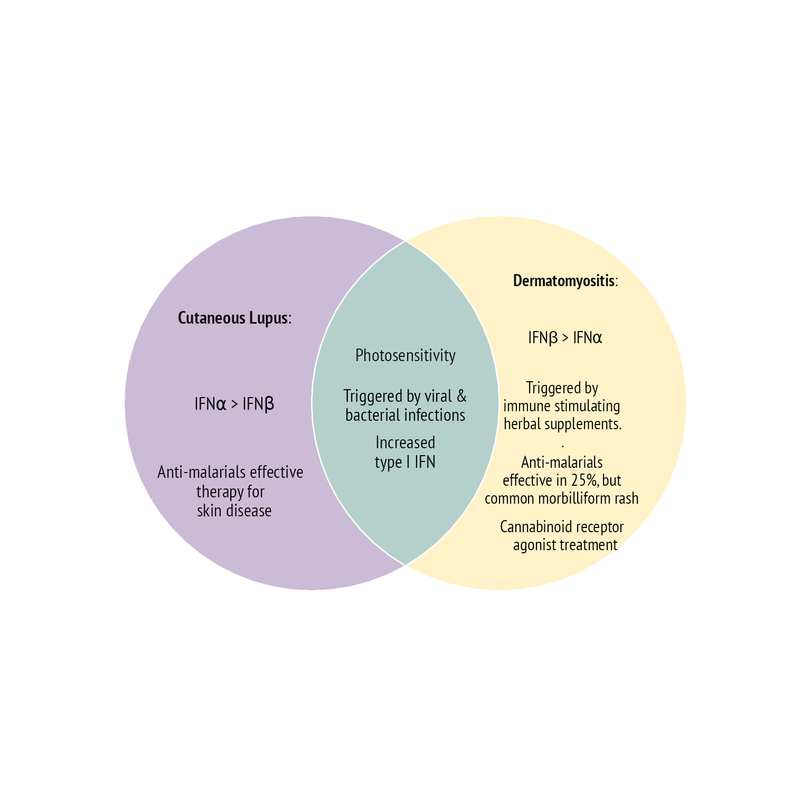

Venn Meme or Concept Venn
Arguments
- x
vectororlistcontaining overlap items, where names represent overlaps. For example the name"A&B"represents the overlap between set"A"and set"B". This input is passed tooverlaplist2setlist(). Inputxcan be a vector of single items for each overlap, or when there are multiple items per overlap, the inputxshould be a list of item vectors. Note that if asetlistis passed tooverlaplist2setlist()it will return thesetlistunchanged.- proportional, item_degrees, plot_style, plot_warning
default arguments passed to
venndir().- item_cex
numericpassed tovenndir(), however whenitem_cexis length=1, it is extended to length=2 in order to prevent the auto-scaling adjustment typically used, which adjusts the font size based upon the relative area of each overlap polygon. In most cases this scaling is not helpful for Venn memes. To enable auto-scaling, useitem_cex=NULL. See help text invenndir()for more details.- ...
additional arguments are passed to
venndir().
Details
This function is a simple wrapper to venndir() with
settings designed to create a Venn Meme. This output
is expected to display usually one or a few item labels
inside each Venn overlap region, and no other counts or
set labels.
The argument item_cex is used to adjust item font size,
and this vector is applied to items in each overlap set in order,
by the number of overlap sets, then in sorted order of the set
names in the order provided. For specific definitive ordering,
run make_venn_combn_df(x) where x is the vector of set names.
The rownames of the output will determine the order in which
item_cex is applied. In practice, use trial and error to adjust
each label to a suitable size.
The input x is intended to be a convenient method for specifying
items in each overlap set. If x has no names, then it is assumed
to represent a convenient Venn diagram based upon the length of x:
length(x)is 1, 2, or 3: two-way Venn diagramlength(x)is up to length 7,15,31: three-way Venn diagramlength(x)is up to length 15: four-way Venn diagramlength(x)is up to length 31: five-way Venn diagram
When more than three sets are represented, it may be helpful to
use a proportional Venn diagram, known as a Euler diagram,
with proportional=TRUE. Note that circular shapes cannot
always represent every overlap, and you can use proportional
ellipse shapes with proportional=TRUE, shape="ellipse".
When an overlap set cannot be displayed in a proportional
diagram, the default plot_warning=FALSE which means no warning
will be displayed. The intent of this function is to provide
an easy "clean" diagram.
See also
Other venndir core:
render_venndir(),
signed_overlaps(),
textvenn(),
venndir()
Examples
bix <- list(
s="Stats",
cs="Computer<br>Science",
b="Biology",
`s&b`="Biostatistics",
`s&cs`="Data<br>Science",
`cs&b`="Computational<br>Biology",
`s&cs&b`="Bioinformatics")
venn_meme(bix)
 venn_meme(bix, proportional=TRUE)
venn_meme(bix, proportional=TRUE)
 venn_meme(bix,
proportional=TRUE,
rotate_degrees=360/6,
item_cex=rep(c(2, 1.4, 2), c(3, 3, 1)))
# what the heck
wth <- list(
WHAT=c("What", "What the", "What heck", "What the heck"),
THE=c("the", "What the", "the heck", "What the heck"),
ACTUAL=c("actual"),
HECK=c("heck", "What heck", "the heck", "What the heck"))
wth <- lapply(wth[c(1,2,4)], function(i){gsub(" ", "<br>", i)})
venn_meme(wth, item_cex=2)

# what the actual heck
wtahv <- c("What", "the", "actual", "HECK");
wtah <- (unlist(lapply(seq_along(wtahv), function(i){
im <- t(combn(wtahv, i))
jamba::nameVector(
jamba::pasteByRow(sep="<br>", im),
jamba::pasteByRow(sep="&", im))
})))
venn_meme(wtah)
venn_meme(bix,
proportional=TRUE,
rotate_degrees=360/6,
item_cex=rep(c(2, 1.4, 2), c(3, 3, 1)))
# what the heck
wth <- list(
WHAT=c("What", "What the", "What heck", "What the heck"),
THE=c("the", "What the", "the heck", "What the heck"),
ACTUAL=c("actual"),
HECK=c("heck", "What heck", "the heck", "What the heck"))
wth <- lapply(wth[c(1,2,4)], function(i){gsub(" ", "<br>", i)})
venn_meme(wth, item_cex=2)

# what the actual heck
wtahv <- c("What", "the", "actual", "HECK");
wtah <- (unlist(lapply(seq_along(wtahv), function(i){
im <- t(combn(wtahv, i))
jamba::nameVector(
jamba::pasteByRow(sep="<br>", im),
jamba::pasteByRow(sep="&", im))
})))
venn_meme(wtah)
 # by default any hidden overlaps do not trigger a warning to be displayed
# Note: using shape="circle" triggers an error in polygon_label_fill()
# that needs to be debugged
# venn_meme(wtah, proportional=TRUE)
# for proportional diagrams it may be helpful to use shape="ellipse"
venn_meme(wtah, proportional=TRUE, shape="ellipse")
# by default any hidden overlaps do not trigger a warning to be displayed
# Note: using shape="circle" triggers an error in polygon_label_fill()
# that needs to be debugged
# venn_meme(wtah, proportional=TRUE)
# for proportional diagrams it may be helpful to use shape="ellipse"
venn_meme(wtah, proportional=TRUE, shape="ellipse")
 # superhero?
avlist <- c(
AV="LEX<br>LUTHOR",
ML="MOUNTAIN<br>LION",
T="TODDLER",
`AV&ML`="Wants to<br>kill you",
`AV&T`="Goes off on<br>a lot of rambling<br>monologues",
`ML&T`="Resists<br>taking a bath",
`AV&ML&T`="Impossible<br>to reason with"
)
venn_meme(avlist,
item_cex=rep(c(2, 1.6, 1.3, 1.7, 1.5),
c(3, 1, 1, 1, 1)))
# superhero?
avlist <- c(
AV="LEX<br>LUTHOR",
ML="MOUNTAIN<br>LION",
T="TODDLER",
`AV&ML`="Wants to<br>kill you",
`AV&T`="Goes off on<br>a lot of rambling<br>monologues",
`ML&T`="Resists<br>taking a bath",
`AV&ML&T`="Impossible<br>to reason with"
)
venn_meme(avlist,
item_cex=rep(c(2, 1.6, 1.3, 1.7, 1.5),
c(3, 1, 1, 1, 1)))
 # happiness in sports
em <- list(
a="short-lived<br>happiness",
b="prolonged<br>suffering",
c="sudden<br>rage",
`a&b`="Eating<br>too much<br>spicy<br>food",
`b&c`="Stubbing<br>your toe,<br>twice",
`a&b&c`="Scrolling<br>through your<br>Twitter feed",
`a&c`="Being<br>a sports<br>fan"
)
# `a&c`="Scrolling<br>through your<br>Twitter feed",
# `a&b&c`="Being<br>a sports<br>fan"
venn_meme(em,
set_colors=c("gold", "dodgerblue3", "firebrick3"),
item_cex=rep(c(2.3, 1.4, 1.7), c(3, 3, 1)))
# happiness in sports
em <- list(
a="short-lived<br>happiness",
b="prolonged<br>suffering",
c="sudden<br>rage",
`a&b`="Eating<br>too much<br>spicy<br>food",
`b&c`="Stubbing<br>your toe,<br>twice",
`a&b&c`="Scrolling<br>through your<br>Twitter feed",
`a&c`="Being<br>a sports<br>fan"
)
# `a&c`="Scrolling<br>through your<br>Twitter feed",
# `a&b&c`="Being<br>a sports<br>fan"
venn_meme(em,
set_colors=c("gold", "dodgerblue3", "firebrick3"),
item_cex=rep(c(2.3, 1.4, 1.7), c(3, 3, 1)))
 # Mister Venn
mrvenn <- c(
sty="Style",
fh="Facial<br>Hair",
str="Strong",
t="Team",
f="Fools",
fu="Funny",
r="Rich",
`sty&fh`="Mr<br>Potato<br>Head",
`fh&str`="Mr Ed",
`str&t`="Mr<br>Incredible",
`t&f`="Mr<br>Bump",
`f&fu`="Mr<br>Bean",
`fu&r`="Mr<br>Burns",
`r&sty`="Mr<br>Peanut",
`sty&fh&str`="Mr<br>Motivator",
`fh&str&t`="Mr<br>Baseball",
`str&t&f`="Mr<br>Strong",
`t&f&fu`="Mr<br>Funny",
`f&fu&r`="Mr<br>Magoo",
`fu&r&sty`="Mr<br>Benn",
`r&sty&fh`="Mr<br>Monopoly",
`sty&fh&str&t&f&fu&r`="Mr T"
)
venn_meme(mrvenn, proportional=TRUE)

# Mister Venn
mrvenn <- c(
sty="Style",
fh="Facial<br>Hair",
str="Strong",
t="Team",
f="Fools",
fu="Funny",
r="Rich",
`sty&fh`="Mr<br>Potato<br>Head",
`fh&str`="Mr Ed",
`str&t`="Mr<br>Incredible",
`t&f`="Mr<br>Bump",
`f&fu`="Mr<br>Bean",
`fu&r`="Mr<br>Burns",
`r&sty`="Mr<br>Peanut",
`sty&fh&str`="Mr<br>Motivator",
`fh&str&t`="Mr<br>Baseball",
`str&t&f`="Mr<br>Strong",
`t&f&fu`="Mr<br>Funny",
`f&fu&r`="Mr<br>Magoo",
`fu&r&sty`="Mr<br>Benn",
`r&sty&fh`="Mr<br>Monopoly",
`sty&fh&str&t&f&fu&r`="Mr T"
)
venn_meme(mrvenn, proportional=TRUE)
